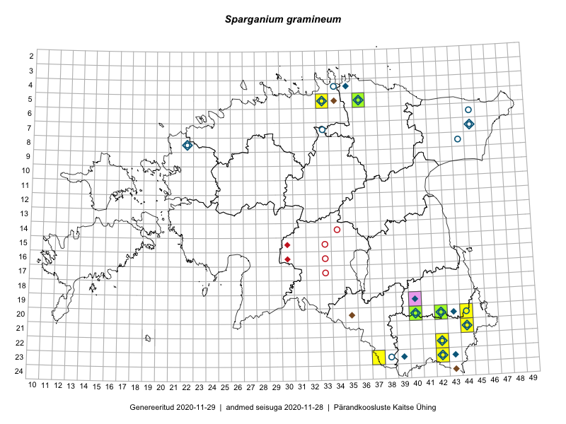

Sparganium gramineum — ujuv jõgitakjas
Typhaceae :: Sparganium gramineum Georgi (114)

Kaart põhineb 122 kirjel:
vaatlusi 48
herbaareksemplare 66
LVA kirjeid1 1
EELISe kirjeid2 7
Taime kaasaegsed ja ajaloolised leiukohad asuvad 24 ruudus.
Tingmärgid ja leidudega ruutude arvud periooditi uues (u) ja 2005 andmestikus (v)
| █ | vahemik | u3 | v4 |
|---|---|---|---|
| █ | 2006–2020 | 10 | – |
| ◆/◇ | 1971–2005 | 17 | 16 |
| ○ | 1921–1970 | 15 | 9 |
| + | kuni 1920 | 0 | 0 |
| × | hävinud | – | 0 |
| ? | kaheldav | – | 1 |
| Ruut | Leidja(d) | Leiuaeg | Kirje |
|---|---|---|---|
| 22-42 | Helle Mäemets, Kadi Palmik-Das | 2020-07-20 | punkt: Sparganium gramineum Georgi |
| 22-42 | Helle Mäemets, Kadi Palmik-Das | 2020-07-20 | punkt: Sparganium gramineum Georgi |
| 05-36 | Helle Mäemets | 2019-07-31 | TAA2004670: Sparganium gramineum Georgi |
| 20-42 | Helle Mäemets, Kadi Palmik-Das | 2019-07-11 | punkt: Sparganium gramineum Georgi |
| 05-33 | Helle Mäemets, Kadi Palmik-Das | 2018-08-10 | punkt: Sparganium gramineum Georgi |
| 05-33 | Helle Mäemets, Kadi Palmik-Das | 2018-08-10 | EELIS: 919807022 |
| 20-40 | Ilmar Uibopuu | 2016-07-21 | LVA: -890883390 |
| 20-42 | Peedu Saar, Tarmo Niitla | 2016-06-16 | punkt: Sparganium gramineum Georgi |
| 20-44 | Katrit Karus, Tõnu Feldmann | 2013-07-06 | punkt: Sparganium gramineum Georgi |
| 20-42 | Helle Mäemets | 2012-09-12 | TAA2004410: Sparganium gramineum Georgi |
| 20-40 | Helle Mäemets | 2012-08-09 | TAA2004403: Sparganium gramineum Georgi |
| 20-42 | Helle Mäemets | 2012-08-09 | TAA2004405: Sparganium gramineum Georgi |
| 20-42 | Helle Mäemets | 2012-07-11 | punkt: Sparganium gramineum Georgi |
| 23-42 | Helle Mäemets | 2011-09-05 | punkt: Sparganium gramineum Georgi |
| 20-40 | Helle Mäemets, Vahur Mäemets | 2011-09-02 | punkt: Sparganium gramineum Georgi |
| 20-40 | Helle Mäemets, Vahur Mäemets | 2011-09-02 | punkt: Sparganium gramineum Georgi |
| 20-40 | Helle Mäemets | 2011-09-02 | TAA2004649: Sparganium gramineum Georgi |
| 20-40 | Helle Mäemets | 2011-09-02 | TAA2004650: Sparganium gramineum Georgi |
| 22-42 | Helle Mäemets | 2011-07-21 | punkt: Sparganium gramineum Georgi |
| 22-42 | Helle Mäemets | 2011-07-21 | punkt: Sparganium gramineum Georgi |
| 22-42 | Helle Mäemets | 2011-07-20 | punkt: Sparganium gramineum Georgi |
| 20-42 | Helle Mäemets, Margit Turb | 2011-07-19 | punkt: Sparganium gramineum Georgi |
| 20-42 | Helle Mäemets, Margit Turb | 2011-07-19 | punkt: Sparganium gramineum Georgi |
| 20-42 | Helle Mäemets | 2011-07-19 | punkt: Sparganium gramineum Georgi |
| 20-42 | Helle Mäemets | 2011-07-19 | TAA2004640: Sparganium gramineum Georgi |
| 23-37 | Helle Mäemets, Vahur Mäemets | 2011-07-13 | punkt: Sparganium gramineum Georgi |
| 21-44 | Helle Mäemets, Vahur Mäemets | 2011-07-11 | punkt: Sparganium gramineum Georgi |
| 20-42 | Helle Mäemets | 2003-07-10 | punkt: Sparganium gramineum Georgi |
| 08-22 | Aime Mäemets | 1995-07-28 | punkt: Sparganium gramineum Georgi |
| 19-40 | Aime Mäemets | 1991-07-08 | punkt: Sparganium gramineum Georgi |
| 19-40 | Aime Mäemets | 1991-07-08 | TAA2003707: Sparganium gramineum Georgi |
| 19-40 | Aime Mäemets | 1991-07-08 | TAA2003708: Sparganium gramineum Georgi |
| 19-40 | Aime Mäemets | 1990-08-24 | TAA2003616: Sparganium gramineum Georgi |
| 23-42 | Aime Mäemets | 1990-08-04 | punkt: Sparganium gramineum Georgi |
| 23-43 | Aime Mäemets | 1990-07-20 | punkt: Sparganium gramineum Georgi |
| 23-43;24-43 | Aime Mäemets | 1990-07-20 | EELIS: 287703767 |
| 23-42 | Aime Mäemets | 1990-07-19 | TAA2003620: Sparganium gramineum Georgi |
| 04-35 | Aime Mäemets | 1988-07-08 | punkt: Sparganium gramineum Georgi |
| 04-35 | Aime Mäemets | 1988-07-08 | TAA2003669: Sparganium gramineum Georgi |
| 05-36 | Aime Mäemets | 1986 | punkt: Sparganium gramineum Georgi |
| 20-42 | Aime Mäemets | 1985-07-31 | punkt: Sparganium gramineum Georgi |
| 20-42 | Aime Mäemets | 1985-07-30 | punkt: Sparganium gramineum Georgi |
| 20-42 | Aime Mäemets | 1985-07-30 | TAA2003623: Sparganium gramineum Georgi |
| 20-35 | Ülle Kukk | 1984-06-27 | EELIS: 1442020480 |
| 23-39 | Aime Mäemets | 1983-07-03 | TAA2001728: Sparganium gramineum Georgi |
| 23-39 | Aime Mäemets | 1983-06-30–1983-07-02 | punkt: Sparganium gramineum Georgi |
| 05-33 | Aime Mäemets | 1981-07-31 | TAA2003714: Sparganium gramineum Georgi |
| 05-33 | Aime Mäemets | 1981-07-31 | TAA2003715: Sparganium gramineum Georgi |
| 08-22 | Aime Mäemets | 1981-07-27 | punkt: Sparganium gramineum Georgi |
| 08-22 | Aime Mäemets | 1981-07-27 | TAA2003723: Sparganium gramineum Georgi |
| 08-22 | Aime Mäemets | 1981-07-27 | TAA2003724: Sparganium gramineum Georgi |
| 08-22 | Aime Mäemets | 1981-07-27 | TAA2003725: Sparganium gramineum Georgi |
| 08-22 | Aime Mäemets | 1981-07-27 | TAA2003726: Sparganium gramineum Georgi |
| 08-22 | Aime Mäemets | 1981-07-27 | TAA2003727: Sparganium gramineum Georgi |
| 08-22 | Aime Mäemets | 1981-07-27 | TAA2003730: Sparganium gramineum Georgi |
| 05-36 | Aime Mäemets | 1981-07-25 | punkt: Sparganium gramineum Georgi |
| 07-45 | Aime Mäemets | 1981-07-20 | TAA2003728: Sparganium gramineum Georgi |
| 20-43 | Aime Mäemets | 1981-06-30 | punkt: Sparganium gramineum Georgi |
| 20-43 | Aime Mäemets | 1981-06-30 | TAA2003718: Sparganium gramineum Georgi |
| 20-42 | Aime Mäemets | 1981-06-29 | punkt: Sparganium gramineum Georgi |
| 23-42 | Aime Mäemets | 1980-07-04 | punkt: Sparganium gramineum Georgi |
| 23-39 | Aime Mäemets | 1978-07-06 | punkt: Sparganium gramineum Georgi |
| 23-39 | Aime Mäemets | 1978-07-06 | TAA2003700: Sparganium gramineum Georgi |
| 23-39 | Aime Mäemets | 1974-07-12 | punkt: Sparganium gramineum Georgi |
| 23-39 | Aime Mäemets | 1974-07-12 | TAA2000569: Sparganium gramineum Georgi |
| 21-44 | Aime Mäemets | 1974-07-08 | punkt: Sparganium gramineum Georgi |
| 23-42 | Aime Mäemets | 1973-07-21 | punkt: Sparganium gramineum Georgi |
| 23-42 | Aime Mäemets | 1973-07-21 | TAA2001583: Sparganium gramineum Georgi |
| 20-40 | Aime Mäemets | 1972-07-20 | punkt: Sparganium gramineum Georgi |
| 20-40 | Aime Mäemets | 1972-07-20 | TAA2003604: Sparganium gramineum Georgi |
| 05-36 | Aime Mäemets | 1972-07-05 | punkt: Sparganium gramineum Georgi |
| 05-36 | Aime Mäemets | 1972-07-05 | TAA2003605: Sparganium gramineum Georgi |
| 22-42 | Aime Mäemets | 1971-07-23 | punkt: Sparganium gramineum Georgi |
| 23-43 | Aime Mäemets | 1971-07-23 | TAA0111292: Sparganium gramineum Georgi |
| 22-42 | Aime Mäemets | 1971-07-23 | TAA2003660: Sparganium gramineum Georgi |
| 23-42 | Aime Mäemets | 1971-07-21 | TAA2003595: Sparganium gramineum Georgi |
| 23-42 | Aime Mäemets | 1970-07-09 | punkt: Sparganium gramineum Georgi |
| 23-42 | Aime Mäemets | 1970-07-09 | TAA0111306: Sparganium gramineum Georgi |
| 23-42 | Aime Mäemets | 1970-07-09 | TAA0111307: Sparganium gramineum Georgi |
| 23-42 | Aime Mäemets | 1970-07-09 | TAA2003590: Sparganium gramineum Georgi |
| 05-33 | Aime Mäemets | 1969-09 | TAA0111289: Sparganium gramineum Georgi |
| 07-33 | Aime Mäemets | 1968-07-23 | TAA0111304: Sparganium gramineum Georgi |
| 07-45 | Aime Mäemets | 1968-07-20 | TAA0111302: Sparganium gramineum Georgi |
| 08-44 | Aime Mäemets | 1968-07-19 | TAA0111303: Sparganium gramineum Georgi |
| 22-42 | Aime Mäemets | 1968-07-15 | TAA2003610: Sparganium gramineum Georgi |
| 05-36 | Aime Mäemets | 1968 | punkt: Sparganium gramineum Georgi |
| 20-42 | Aime Mäemets | 1962-08-22 | TAA2003599: Sparganium gramineum Georgi |
| 20-42 | Aime Mäemets | 1962-08-22 | TAA2003600: Sparganium gramineum Georgi |
| 20-42 | Aime Mäemets | 1962-08-22 | TAA2003601: Sparganium gramineum Georgi |
| 20-42 | Aime Mäemets | 1961-08-04 | punkt: Sparganium gramineum Georgi |
| 20-42 | Aime Mäemets | 1961-08-04 | TAA0111299: Sparganium gramineum Georgi |
| 20-42 | Aime Mäemets | 1961-08-04 | TAA0111300: Sparganium gramineum Georgi |
| 20-42 | Aime Mäemets | 1961-08-04 | TAA0111301: Sparganium gramineum Georgi |
| 20-42 | Aime Mäemets | 1961-08-04 | TAA2003602: Sparganium gramineum Georgi |
| 20-42 | Aime Mäemets | 1961 | punkt: Sparganium gramineum Georgi |
| 20-44 | Aime Mäemets, Aare Mäemets | 1960 | punkt: Sparganium gramineum Georgi |
| 22-42 | Heljo Tuvikene | 1957-07-17 | punkt: Sparganium gramineum Georgi |
| 22-42 | H. Tuvikene | 1957-07-17 | TAA0111297: Sparganium gramineum Georgi |
| 22-42 | H. Tuvikene | 1957-07-17 | TAA0111298: Sparganium gramineum Georgi |
| 08-22 | H. Tuvikene | 1955-07-25 | TAA0111290: Sparganium gramineum Georgi |
| 08-22 | H. Tuvikene | 1955-07-25 | TAA0111291: Sparganium gramineum Georgi |
| 20-40 | H. Tuvikene | 1954-07-06 | TAA0111293: Sparganium gramineum Georgi |
| 20-40 | H. Tuvikene | 1954-07-06 | TAA0111294: Sparganium gramineum Georgi |
| 20-40 | H. Tuvikene | 1954-07-06 | TAA0111295: Sparganium gramineum Georgi |
| 04-34 | Heljo Tuvikene | 1953-07-19 | punkt: Sparganium gramineum Georgi |
| 08-22 | H. Tuvikene | 1953-07-07 | TAA0111305: Sparganium gramineum Georgi |
| 21-44 | L. Enari | 1937-08-11 | TU253328: Sparganium gramineum Georgi |
| 22-42 | H. Tuvikene | 1937-07-17 | TAA0111296: Sparganium gramineum Georgi |
| 05-33 | Gustav Vilbaste | 1935-08-15 | TAA0111309: Sparganium gramineum Georgi |
| 05-33 | Gustav Vilbaste | 1935-08-15 | TAA0111310: Sparganium gramineum Georgi |
| 05-36 | Heinrich Riikoja | 1932 | punkt: Sparganium gramineum Georgi |
| 06-45 | Gustav Vilbaste | 1929-07-12 | TAA0111308: Sparganium gramineum Georgi |
| 05-33 | Gustav Vilbaste | 1927-08-08 | TAA0111288: Sparganium gramineum Georgi |
| 05-33 | Gustav Vilbaste | 1927-08-08 | TAA0111311: Sparganium gramineum Georgi |
| 21-44 | E. Spohr | 1922-08-07 | TU258671: Sparganium gramineum Georgi |
| 23-38 | E. Lukats | 1922-07-28 | TU253329: Sparganium gramineum Georgi |
| 23-38 | E. Lukats | 1922-07-28 | TU268272: Sparganium gramineum Georgi |
| 23-38 | E. Lukats | 1922-07-28 | TU268273: Sparganium gramineum Georgi |
| 05-34 | Mäemets | EELIS: -779731971 | |
| 22-42 | Helle Mäemets | EELIS: -2020728660 | |
| 23-42 | Helle Mäemets | EELIS: 1259554812 | |
| 19-40 | Helle Mäemets | EELIS: 1909613346 |
Loodusvaatluste andmebaas. https://lva.eelis.ee, väljavõte seisuga 19.10.2020↩︎
EELIS (Eesti Looduse Infosüsteem - Keskkonnaregister): Keskkonnaagentuur; andmed seisuga 27.10.2020. Väljavõttest on tuletatud ruudu täpsusega kirjed seal, kus antud ruut/periood ei ole juba asustatud muude allikate järgi↩︎
Ruutude arv uue atlase andmekogu järgi. Muuhulgas arvestab vanemat herbaariumi, 2005. aasta atlase välitöölehtedelt uuesti digitaliseeritud andmeid jne. Uue atlase andmekogust pärinevad andmed on kaardile kantud siniste sümbolitega.↩︎
Ruutude arv 2005. aasta atlase (Kukk, T., Kull, T., Eesti taimede levikuatlas. Eesti Maaülikool, Põllumajandus- ja Keskkonnainstituut, Tartu, 2005) järgi. Andmeallikana on kasutatud levik.exe programmi, kus igas ruudus on registreeritud vaid uusim leid. Seetõttu on vanemate perioodide kohta andmed puudulikud. Kasutatud levik.exe andmestikus leidub mõningaid kõrvalekaldeid atlase trükis ilmunud versioonist, sagedamini tarnade ja käpaliste seas. Lisaks leidub selles andmestikus valik liike (peamiselt väheste leidudega tulnuktaimed), mille kaarte trükis ei avaldatud. Vana atlase andmed ruutudest, milles ei ole uue atlase andmekogus leide enne 2006. aastat, on kaardil esitatud punaste sümbolitega. Vana atlase andmetel hävinud ja kaheldavaid leiukohti pole hilisemate (taas)leidude põhjal korrigeeritud.↩︎